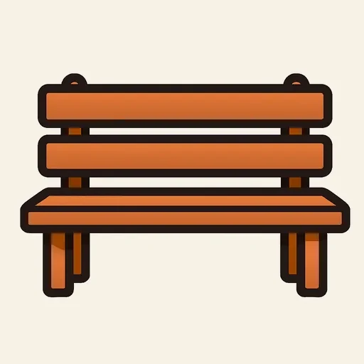
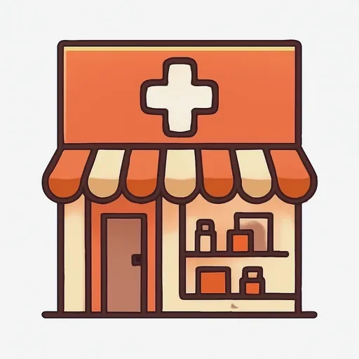
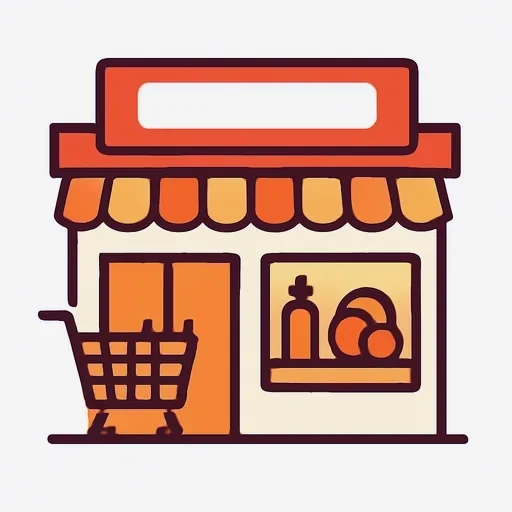
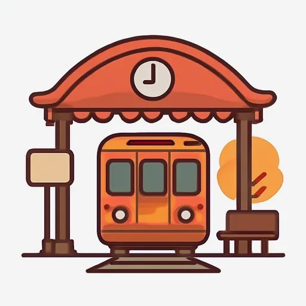
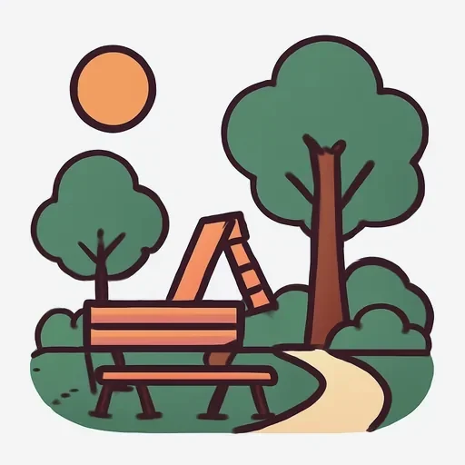
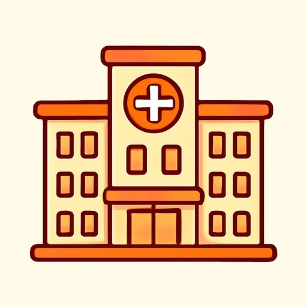
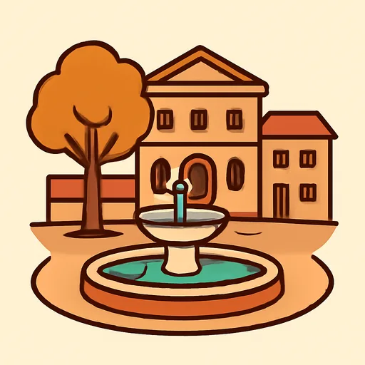
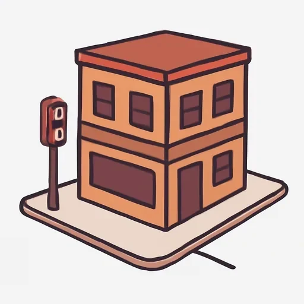

Черновик: урок написан, но преподаватель его ещё не вычитал.
Semana 7 · Día 4 — La ciudad: ¿Dónde está el banco?
Неделя 7 · День 4 — Город: где банк?
Сегодня вы научитесь
- называть семь мест в городе и спрашивать, где они;
- двум обязательным слияниям испанского языка: a + el = al, de + el = del;
- задавать вопрос с правильной интонацией — испанской, а не русской.
1. Разминка (0–3 мин)
- Карточки: 10 слов — этажи, прилагательные о квартире, мебель.
- Вопрос: ¿Cómo es tu piso y en qué planta está? Две фразы вслух.
2. Фонетика (3–6 мин)
Интонация вопроса. В испанском два типа вопросов, и ведут они себя по-разному:
- вопрос без вопросительного слова (ответ «да» или «нет») — голос идёт вверх и остаётся наверху: ¿Hay un banco aquí? ↗
- вопрос с вопросительным словом (qué, dónde, cómo) — голос поднимается на самом вопросительном слове и к концу падает: ¿Dónde está el banco? ↘
Русская привычка мешает в первом типе: по-русски «Банк здесь?» поднимается на слове «здесь», а в конце падает. Из-за этого испанский вопрос у русского звучит как утверждение, и вам отвечают «да?» вместо ответа.
Прочитайте вслух, строго по стрелкам:
¿Hay un banco aquí? ↗ · ¿Dónde está el banco? ↘ · ¿La farmacia está cerca? ↗ · ¿Qué hay en esta calle? ↘ · ¿Es el supermercado? ↗ · ¿Cómo se llama esta plaza? ↘ · ¿Está lejos el hospital? ↗ · ¿Dónde está correos? ↘
Запишите себя и послушайте первую и вторую фразы подряд: они должны заканчиваться по-разному.
3. Новое (6–16 мин)
Пример
У Росы первый день в новом районе. Она спрашивает у соседки, где что
находится. [AUDIO]
| Español | Русский |
|---|---|
| Rosa: Perdón, ¿hay un banco por aquí? | Простите, здесь рядом есть банк? |
| Señora: Sí, hay un banco al lado del supermercado. | Да, есть банк рядом с супермаркетом. |
| Rosa: ¿Y dónde está el supermercado? | А где супермаркет? |
| Señora: Está en la esquina, enfrente de la farmacia. | На углу, напротив аптеки. |
| Rosa: Gracias. ¿Y la estación? ¿Está lejos? | Спасибо. А вокзал? Далеко? |
| Señora: No, está cerca: al final de la calle, detrás del parque. | Нет, близко: в конце улицы, за парком. |
| Rosa: ¿Hay una oficina de correos en el barrio? | А в районе есть почта? |
| Señora: Sí, correos está al lado del hospital, enfrente de la plaza. | Да, почта рядом с больницей, напротив площади. |
| Rosa: Muchas gracias, señora. | Большое спасибо. |
| Señora: De nada. ¡Hasta luego! | Не за что. До свидания! |
Найдите в диалоге три al и три del. Что стоит после них — всегда одно и то же по роду?
Объяснение
Сравните. По-русски: «иду к банку», «рядом с банком», «напротив банка» — три предлога, три падежа и ни одного артикля. По-испански падежей нет, слово banco не меняется, зато перед ним почти всегда стоит артикль. И вот тут происходит единственное обязательное слияние испанского языка: предлоги a и de, встретив артикль el, склеиваются с ним в одно слово.
| Предлог + артикль | Слитно? | Пример |
|---|---|---|
| a + el | → al | Voy al banco. · al final de la calle |
| de + el | → del | al lado del parque · detrás del hospital |
| a + la | a la (раздельно) | Voy a la farmacia. |
| de + la | de la (раздельно) | enfrente de la plaza |
| a + los / a las | раздельно | Voy a los parques. |
| de + los / de las | раздельно | detrás de las casas |
Сливаются только эти две пары. Больше никакие. И это не стиль, а орфография: a el и de el в двух словах не пишут никогда. (С местоимением él — «он», с тильдой — слияния нет: de él. Но это другое слово, и до него нам ещё далеко.)
Чаще всего al и del попадаются внутри длинных предлогов места, потому что все они кончаются на de:
| Español | Русский | С мужским родом |
|---|---|---|
| al lado de | рядом с | al lado del banco |
| enfrente de | напротив | enfrente del hospital |
| detrás de | за, позади | detrás del parque |
| delante de | перед | delante del supermercado |
| cerca de / lejos de | близко от / далеко от | cerca del centro |
| al final de | в конце | al final de la calle |
| en la esquina (de) | на углу | en la esquina de la calle Mayor |
Места в городе: el banco (банк) · la farmacia (аптека) · el supermercado (супермаркет) · la estación (вокзал, станция) · el parque (парк) · el hospital (больница) · correos (почта) · la plaza (площадь) · el barrio (район).
⚠️ Контраст с русским
- В русском направление и местоположение показывает падеж: «к банку», «у банка», «напротив банка». Предлог короткий, окончание делает работу, и никакого слова между предлогом и существительным нет.
- В испанском между предлогом и существительным почти всегда стоит артикль — и когда это el, предлоги a и de с ним сливаются: al, del. Выбора здесь нет: это обязательно, как русское «ко» в «ко мне» или «со» в «со мной».
- Вы захотите сказать: ✗ Voy a el banco. ✗ al lado de el parque. ✗ Voy al farmacia. → Правильно: ✅ Voy al banco. ✅ al lado del parque. ✅ Voy a la farmacia. Третья ошибка — обратная и очень частая: выучив al, его начинают ставить везде. Но с женским родом слияния нет.
Что помогает: ✅ в русском тоже есть обязательные слияния предлога с соседом — «ко мне», «со мной», «во дворе», «изо всех сил». Вы их не выбираете, вы просто так говорите. Al и del — то же самое, и привыкнуть к ним быстрее, чем кажется.
4. Практика (16–26 мин)
Упражнение А. Напишите a, al, a la, de, del или de la.
Модель: El banco está al lado supermercado. → del
- La farmacia está enfrente hospital.
- La farmacia está enfrente estación.
- Rosa va banco.
- Rosa va farmacia.
- El parque está detrás supermercado.
- El parque está detrás plaza.
- Correos está al final calle Mayor.
- Nikolái va parque con su hermana.
- El bar está en la esquina calle Nueva.
- El hospital está cerca centro.
- Vamos plaza.
- La casa de Rosa está lejos aeropuerto.
Упражнение Б. Дополните текст словами из банка. Каждое слово — один раз.
Банк слов: del · de la · al lado · enfrente · esquina · plaza · supermercado · farmacia
El barrio de Nikolái es tranquilo. En el centro hay una (1) grande. (2) de la plaza hay un (3) y un bar. La (4) está en la (5) de la calle Mayor, (6) del hospital. El parque está detrás (7) hospital, y la estación está al final (8) calle Nueva.
Упражнение В. Переведите на испанский.
- Где банк? — Банк рядом с супермаркетом.
- Аптека напротив больницы.
- Я иду в парк.
- Я иду на почту.
- Площадь в конце улицы.
- Вокзал далеко от центра.
- Бар на углу, за аптекой.
- Здесь рядом есть супермаркет?
5. Выход (26–29 мин)
Разместите 10 мест на плане и скажите, где они находятся.
Нарисуйте от руки перекрёсток двух улиц: la calle Mayor (с запада на восток) и la calle Nueva (с севера на юг). Получится четыре угла. Разместите на плане десять мест — по своему усмотрению, как вам нравится:
el banco · la farmacia · el supermercado · la estación · el parque · el hospital · correos · la plaza · el bar · la escuela
Потом напишите десять фраз, по одной на каждое место: где оно находится. В каждой фразе — предлог места, и как минимум в четырёх должно появиться al или del. Прочитайте вслух и проверьте интонацию вопросов, если будете их задавать.
Образец: El banco está en la esquina de la calle Mayor. La farmacia está enfrente del banco. El supermercado está al lado de la farmacia. La estación está al final de la calle Nueva…
6. Итог (29–30 мин)
- [ ] Я называю семь мест в городе и спрашиваю ¿Dónde está…? с падающей интонацией.
- [ ] Я пишу al и del слитно — и только с el.
- [ ] Я не ставлю al перед женским родом: a la farmacia.
- Добавьте слова дня в колоду, с артиклем.
Словарь дня
| Español | Русский | Пример |
|---|---|---|
 el banco |
банк | ¿Dónde está el banco? |
 la farmacia |
аптека | La farmacia está enfrente del hospital. |
 el supermercado |
супермаркет | Voy al supermercado. |
 la estación |
вокзал, станция | La estación está al final de la calle. |
 el parque |
парк | El parque está detrás del hospital. |
 el hospital |
больница | El hospital está cerca del centro. |
| correos | почта (отделение) | Correos está enfrente de la plaza. |
 la plaza |
площадь | La plaza está en el centro. |
| enfrente de | напротив | Enfrente de mi casa hay un parque. |
 la esquina |
угол | El bar está en la esquina. |
Ответы
А. 1. del · 2. de la · 3. al · 4. a la · 5. del · 6. de la · 7. de la · 8. al · 9. de la · 10. del · 11. a la · 12. del. — Пройдите по списку ещё раз и посмотрите, что общего у 1, 3, 5, 8, 10, 12: после слияния всегда стоит существительное мужского рода. Там, где род женский (2, 4, 6, 7, 9, 11), слияния нет.
Б. 1. plaza · 2. Enfrente · 3. supermercado · 4. farmacia · 5. esquina · 6. al lado · 7. del · 8. de la.
Текст целиком: El barrio de Nikolái es tranquilo. En el centro hay una plaza grande. Enfrente de la plaza hay un supermercado y un bar. La farmacia está en la esquina de la calle Mayor, al lado del hospital. El parque está detrás del hospital, y la estación está al final de la calle Nueva.
В. 1. ¿Dónde está el banco? — El banco está al lado del supermercado. 2. La farmacia está enfrente del hospital. 3. Voy al parque. 4. Voy a correos. — у correos артикля обычно нет, как у названия; полная форма — voy a la oficina de correos. 5. La plaza está al final de la calle. 6. La estación está lejos del centro. 7. El bar está en la esquina, detrás de la farmacia. 8. ¿Hay un supermercado por aquí? — вопрос без вопросительного слова: голос вверх и наверху остаётся. Русское «есть ли здесь» превращается в ¿Hay…?, а не в ¿Está…?: супермаркет называется впервые.